Istoria constelațiilor
Din cele mai vechi timpuri stea grupurile cunoscute sub numele de constelații au primit nume care conotează unele fenomene meteorologice sau care simbolizează credințe religioase sau mitologice. La un moment dat s-a considerat că numele constelațiilor erau de origine greacă. Această viziune a fost acum infirmată, iar o examinare a miturilor elene asociate cu stelele și grupurile de stele în lumina înregistrărilor dezvăluite prin descifrarea cuneiformelor mesopotamiene duce la concluzia că miturile grecești au o component mezopotamiană.
Cea mai veche lucrare greacă care pretindea să trateze constelațiile drept constelații, despre care există anumite cunoștințe, este Phainomena lui Eudoxus din Cnidus (c. 395–337bce). Originalul este pierdut, dar o versificare de către Aratus (c. 315–245bce), poet la curtea lui Antigonus II Gonatas, rege al Macedoniei, este existent.
 Sistemul de constelații pe care îl folosim în prezent se bazează pe cele 48 de constelații descrise de renumitul astronom grec din Alexandria, Ptolemeu, în lucrarea sa cunoscută mai ales sub titlul ei arab Almagest. În această lucrare apărută în anul circa 150 î.H., Ptolemeu face o sinteză a cunoștințelor din domeniul astronomiei din acea vreme, majoritatea datelor provenind de la observațiile făcute de către Hiparh cu 300 de ani mai devreme. Catalogul cuprinde 1.022 de stele care sunt grupate în 48 de constelații, dintre care 47 mai există și azi; a 48-a, Nava Argonauților (Argo Navis ), a fost împărțită în 4 constelații: Carina, Puppis, Pyxis, Vela. Nu este cunoscut exact locul unde s-au aflat pe cer aceste figuri, însă există o particularitate a reprezentărilor care ne ajută: porțiunea de forma unui cerc în jurul polului sud ceresc, în care nu au existat constelații. De aici se poate deduce că locul trebuie să se afle undeva pe la 36 ° latitudine nordică. De asemenea, poziția centrului acestui cerc față de polul sud de astăzi s-a schimbat datorită precesiei; acest fapt ne indică timpul care a trecut de atunci: circa 4.500 ani.